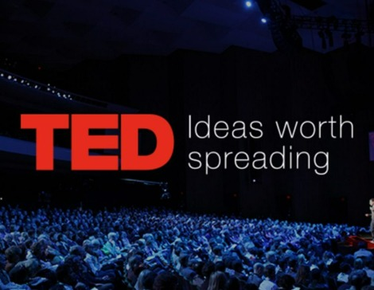

Life is full of challenges and setbacks, and it is
easy to feel discouraged and
like giving up when faced with these obstacles. However, it is during these tough times that we can rise
and prove to ourselves and others that we are capable of overcoming adversity. One key to rising in the
face of challenges is to stay positive and keep a growth mindset. This means believing that we can learn
and grow from our mistakes and setbacks and that we can improve and succeed. It's important to focus on
the progress we have made rather than dwelling on our failures. Ultimately, rising in the face of
challenges requires perseverance and hard work. It won't always be easy, but it will be worth it in the
end. By facing our challenges head-on and working towards our goals with determination, we can rise and
achieve success.

TED is a nonprofit organization devoted to Ideas Worth Spreading. Started as a four-day conference in
California 30 years ago, TED has grown to support its mission with multiple initiatives. The two annual
TED Conferences invite the world's leading thinkers and doers to speak for 18 minutes or less. Many of
these talks are then made available, free, at TED.com. TED speakers have included Bill Gates, Jane
Goodall, Elizabeth Gilbert, Sir Richard Branson, Nandan Nilekani, Philippe Starck, Ngozi Okonjo-Iweala,
Sal Khan and Daniel Kahneman.
Know more
In the spirit of ideas worth spreading, TED has created a program called TEDx. TEDx is a program of
local, self-organized events that bring people together to share a TED-like experience. Our event is
called TEDxIITBhubaneshwar, where x = independently organized TED event. At our TEDxIITBhubaneshwar
event, TED Talks video and live speakers will combine to spark deep discussion and connection in a small
group. The TED Conference provides general guidance for the TEDx program, but individual TEDx events,
including ours, are self-organized.
Know
more


 linkedin
linkedin Instagram
Instagram